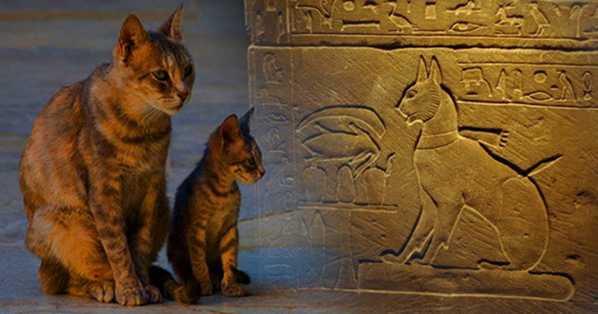
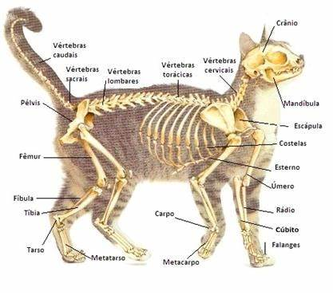
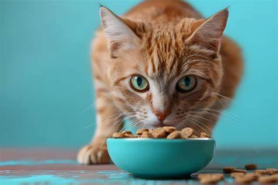

Gato-doméstico
O gato-doméstico (Felis catus) é um mamífero carnívoro pertencente à família dos felídeos. É amplamente domesticado e se adaptou à vida em ambientes urbanos e rurais. Estima-se que existam mais de 600 milhões de gatos domésticos no mundo.
História
Os primeiros registros da domesticação dos gatos remontam ao Antigo Egito, onde eram reverenciados como animais sagrados. Sua habilidade para caçar ratos e outros roedores os tornou indispensáveis na agricultura. Através das rotas comerciais, os gatos se espalharam pelo mundo, conquistando diferentes culturas.
Anatomia e Fisiologia
Gatos possuem corpos ágeis, garras retráteis e uma espinha extremamente flexível. Seus olhos adaptam-se à pouca luz, tornando-os excelentes caçadores noturnos. A audição é altamente desenvolvida, e seus bigodes funcionam como sensores de movimento e espaço.
Comportamento

São animais independentes, limpos e geralmente territoriais. Comportamentos comuns incluem afiar as garras, marcar território com cheiro e ronronar. Também são curiosos por natureza e exploram tudo ao seu redor. Gatos comunicam-se através de miados, linguagem corporal e vocalizações variadas.
Alimentação
Gatos são carnívoros estritos e precisam de proteínas animais para sobreviver. A taurina, um aminoácido encontrado apenas em tecidos animais, é essencial para sua saúde. Muitos tutores optam por rações balanceadas, mas dietas naturais também podem ser utilizadas com orientação veterinária.
Relação com os Humanos

Ao longo da história, os gatos foram vistos de formas distintas: de deuses no Egito a símbolos de má sorte na Europa medieval. Hoje, são valorizados por sua companhia, independência e personalidade afetuosa. A terapia com gatos é utilizada em algumas práticas de saúde mental.
Curiosidades
- Gatos podem saltar até seis vezes sua altura.
- O ronronar pode ser sinal de prazer, dor ou até pedido de ajuda.
- O nariz de cada gato é único, como as impressões digitais humanas.
- Gatos têm mais ossos que os humanos: cerca de 230.